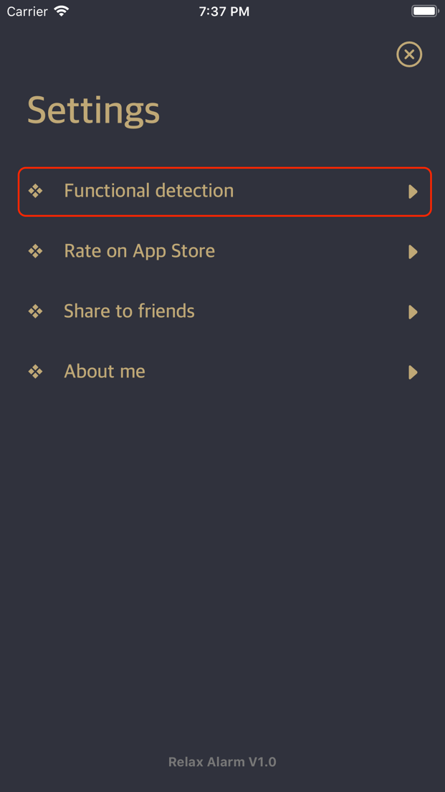
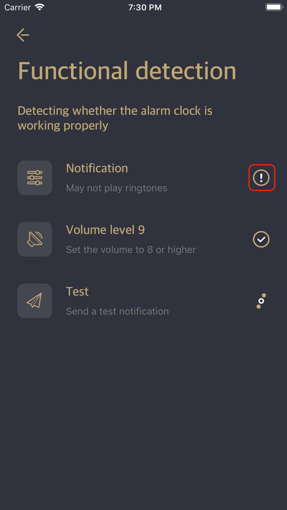
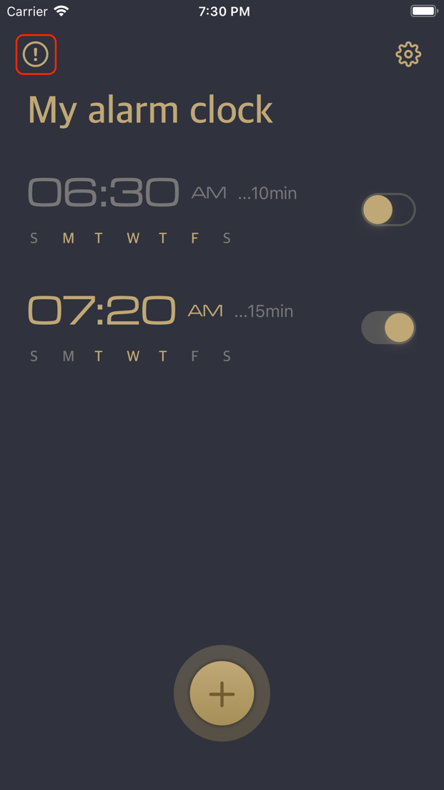
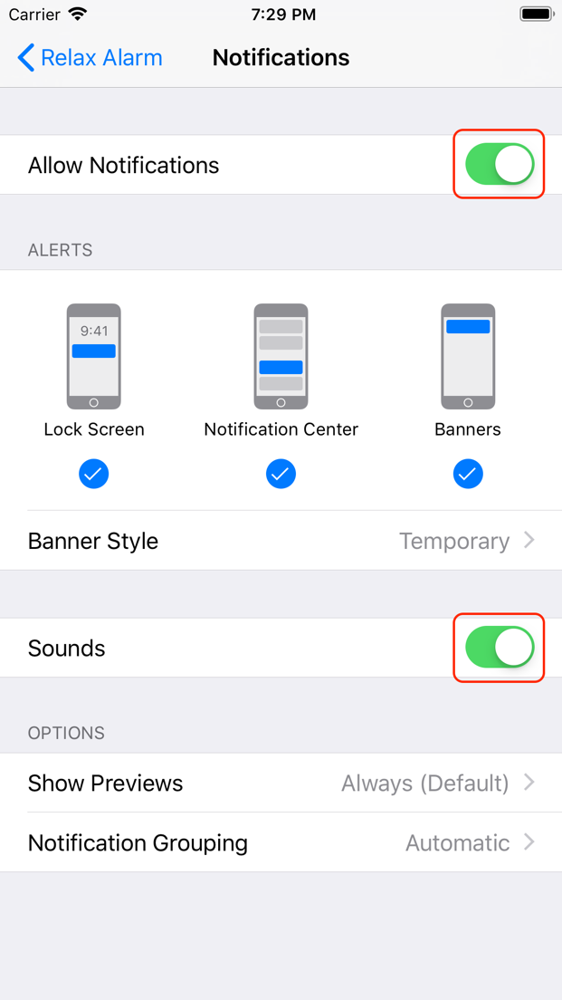

The operation Relax Alarm application is very simple. The commonly used settings are in accordance with the usage habits of the alarm clock software. If your alarm clock does not work properly, please try the following methods.
Use the function detection that comes with the app to find out why the alarm is not working properly.
In the settings page, click on the “Functional detection” option and the app will automatically start looking for possible problems.

The detected items include notification authorization, mobile device speaker volume, and finally a test notification is sent to detect if the notification can be received normally. After the test is completed, a status icon will be displayed on the right side of each test. For notification of authorization, you can click the “!” icon to try to solve it.

If there is a problem with the speaker volume item, the volume of your mobile device output does not reach the recommended volume level. You can adjust the volume by pressing the volume adjustment button on the side of the mobile device. We recommend that you adjust the volume to 8 Between 12, this will not cause you to hear the alarm ringer because the sound is too small, nor will it scare you because the sound is too loud. (This result may vary from person to person)
Under normal circumstances, if the alarm does not work properly, the biggest possibility is to notify the authorization problem. On the “My Alarm Clock” page of the application, if you see the icon with “!” in the upper left corner of the page, your notification authorization has Question, click on the icon and follow the prompts to help you solve this problem.

View the status of the notifications feature directly in your mobile device’s Settings.
Open the mobile app’s Settings app, find the “Notifications” option and click to find the “Relax Alarm” app and click to enter.
Turn the “Notification” switch on and make sure the “Sound” option is turned on.

After this is done, the alarm function should work fine.